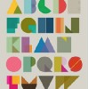

&<形SHAPE状>&
(13)
制作人：柔情梦 @2012-11-02
幸福的形状，爱情的形状，感情的形状都是什么样的形状？圆形？三角形？四角形？
挂满回忆的绿树摇曳 承载青春的台湾民谣
(47)
制作人：Mr.J @2012-11-02
有人定义“民谣”有两重涵义，一为"不用乐器伴奏的歌曲歌唱"，二为"民间流行歌谣"。传统意义上的台湾台语民谣源于东南沿海赴台的先民。这些民谣经过辗转流传，孕育出了真正的台湾本土歌谣，比如曾广为...